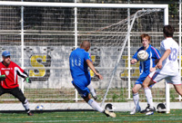

OLD STORIES - October 2007
JETs Remain Grounded
YC&AC, Sunday 28th October,
After last week’s humiliation at the hands of Sala the Saitama Jets were looking to bounce back against YCAC. The Jets delivered a performance big on heart and commitment, recovering from two goals down, but crucially lacking in quality and eventually succumbed to a late winner. more ...
RK.
Hibs Gaining Momentum.
YC&AC, Sunday 21st October,
The Hibs were caught off guard before the game by the green stuff all over the YCAC pitch, but it turned out be grass - our first of the season, natural or otherwise. We also had perfect weather and new kit, and the still bitter memory of the 3-0 whipping YCAC laughingly gave us last season. more ...
JA.
Still No Joy for BEFC
Misato, Sunday 21st October,
With blue skies and with the sun shining strongly a real sense of optimism could be felt amongst the Embassy players. Was this to be the fateful day when we would lose our Div. 1 virginity and post some points on the board? It certainly felt like it. With seventeen names on the teamsheet sixteen turned up at Misato station bright and early, with only Brian's identical twin brother Brian failing to appear. more ...
AE.
 |
|
Shigeru Chino fire home his first goal of TML5 |
Suffering Jets.
Hanno Misugidai, Saturday 20th October,
Sala recorded their highest ever league victory over a depleted Jets side on Saturday amongst the mountains of Hanno, in distant Saitama. It’s a nice little pitch though a bit on the short side.
Sala got out of the blocks quickly and piled the pressure on the Jets backline with neat, short passing and some pace on the flanks.
In fact there were so many chances in the opening fifteen minutes that it would be fair to say that Sala were extremely unlucky not to find themselves four or five goals to the good. Toby and Dhugal could each have had a first half hat trick, and on another day probably would have. more ...
AH.
Jets 2nds Blunder to 3-2 Win
Hanno Misugidai, Saturday 20th October,
A beautiful sunny afternoon in the mountains of Hanno, the maple leaves a burnished orange with the first hint of autumn, yet it was a worried Cap’n Dez who looked to the horizon two minutes before kick-off, wondering if his team was ever going to arrive. Warm-up was perfunctory and a slightly under-prepared Jets side took the field against the unknown quantity of the Panthers. more ...
CP.
BFC Do Number on their Little Bruv.
|  |
|
Captain Jon Day Gets his first of the season to help BFC overcome Vags. |
ASIJ, Sunday 21st October,
Historic. Titanic. Very, very noisy. BFC did a number on the Vags in a high-decibel TML clash, winning 5-0 to preserve their 100 percent start to the season.
Skipper Jon Day scored twice as BFC went on one in the second half. There was much swearing. A shaky truce was finally declared late that night.. more ...
AH.
BFC Unable to Improve Their 100% Record
ASIJ, Sunday 21st October,
The year was 2087 and little Sid Lloyd III looked at his Puma-sponsored personal info-pad showing a match report from 22 October 2007. “5-0! That must ‘ave been a right ‘ammering” he said, mimicking the accent of his Great Great Grandfather, old man Lloyd, or Snowy, as he was now affectionately known. Snowy had given him the info-pad from his turbo wheelchair a few days earlier but if little Lloyd had witnessed the game in person, as is so often said, he would have seen a different match than the one the result suggested. more ...
HS.
YCAC 2nds Start at Pace.
YC&AC, Sunday 21st October,
Somewhat later than the rest of the League, YCAC2's finally got their 07/08 TML season underway against Shane at the YCAC. Although we had done a bit of pre-season, we are not normally strong starters and were keen to make an exception this year. The team had a new look to it (and not only because of the nifty new grey strip). We welcomed back some old boys, some new faces (Nigel, Nick, Harty and Mikey) and were missing a few due to RWC and holidays. more ...
SM.
 |
|
Ken Hersche saved Lions some blushes by scoring against the 9 man Dutch FC. |
Lions Make Hard Work of 9 Man DEFC
Misato, Sunday 21st October,
On a day where Lions were missing 1 or 2 key players in defence and midfield, the least worry should have been the attack. Dutch Embassy started with 8 players, and went up to 9 players after 15 minutes or so. Lions had 15 players, 7 of those are attacking players. Playing against an incomplete team should be difficult, because of sitting back, meaning less chances created. BUT!, that wasnt the case! Dutch Embassy had 1 attempt at goal and a couple of corners throughout the game, with Lions creating enough chances to give Dutch Embassy a negative goal difference that would take them 2 seasons to recover from! more ...
HS.
That'll Do Nicely
YC&AC, Saturday 20th October,
Since the TML started the Geckoes had played the Swiss eight times in the league and never picked up a point, in fact they’d only scored four goals so it’s fair to say that the Swiss would have been feeling quite confident going into the game. However the Geckoes showed when they played BFC a couple of weeks ago, the majority of the game with ten men, that they are no pushovers and they certainly proved that during the game. more ...
RK.
Footy Japan to Organize 2 Day New Year 7's
OI FUTO, 15th October,
Finally, Footy Japan are able to offer a tournament along the lines of the ones many players have been travelling to in SE Asia. A 2-day affair, with qualifying followed by knockout rounds. Due to the lack of availability of grounds, we've had to wait til now to get somewhere suitable and Oifuto (Dai Ni!!!!) has finally given us the chance. On the weekend of January 5th & 6th, 2008, we will hold the New Year 7's and are hoping to attract 32 teams to enter. For more details, click here.
FJ Founders, Jon & Sid have been immortalized on YouTube. Following the success of the PUMA TRIBES website, Doe Profero of London decided to make a cartoon strip of the stars although FJ's 'Jay & Silent Bob' appear to have picked up some strange accents!! Watch ...
FJ.
 |
|
YCAC'S Anthony Savage gets a hug after his 35yd corker. |
No Luck Say Irish, Just Grit!
Misato, Sunday 14th October,
Some would say the "luck of the Irish" had something to do with the comeback the Celts pulled off at Misato, 0-3 down against YCAC with 10 minutes of the second half gone; who would have thought that the game could end in a draw. Today, there were no four leaf clovers or lucky leprechauns around, just some good old fashion grit, determination, strength of character, confidence & team spirit from the lads to get back into a game that just ran away from us.
Once again Celts were missing some regular first team players and having two players failing the early morning fitness test meant a mere 12 players available with two of them having just played 80 minutes in the earlier 2nd division game.. more ...
SY.
 |
|
Usually a keeper, Hitoshi Ono shows the strikers how to score! |
Ravenous Albion Feast on Guarana
Misato, Sunday 14th October,
You wouldn't normally expect a team with an average age on the boneyard side of forty to come roaring out of the starting blocks like Linford Christie with a lighted firework up his jacksy, but that's exactly what happened at Misato on Sunday, as Albion Old Boys laid claim to the fastest-ever TML goal, Hitoshi Ono finishing off an eight pass move to score after 20 seconds without a Guarana player having touched the ball (and we have the video to prove it !!). more ...
TC.
 |
|
Barbarians & Maritizio finally got to Tango! |
Henry's Brace Beats Babas
Misato, Sunday 14th October,
With confusion still surrounding the previous Maritizio & Barbadians fixture over a supposed game forfeit, as suffered by the Swiss to the Hibs moments before, it was clear from the re-scheduled fixture itself that there was likely to be an added bite to this game. This being more so the cases since both teams were appearing to be potential 2nd division front runners, with similar points on the table. more ...
VG.
Ah…Tyrants
Misato, Sunday 14th October,
Wow. Stone me! Cor blimey. Shockaroony. Flawless performances from Sala certainly number fewer than hairs on Clarkey’s head, but this must have been close. On top of that, a Sala clean sheet is currently sitting between the Amur Leopard and Iberian Lynx atop the WWF’s Critically endangered/Feared extinct- species list. more ...
RC.
Jets 2nds Humble Guarana Repubic 4-0
Misato, Sunday 7th October,
The Jets 2nds finally got their season underway, and did so in style in style, claiming a 4-0 victory over the Guarana Republic. Chris the Pied Piper led the Jets Rat-Pack safely through the caverns and crevasses of the bogged Misato pitch, as the Guaranese defence was led a merry dance of step-overs and fox-trotting. Although Chris was conducting the tune, there were also notable solo performances from Hiro in his first competitive game, and from Shinichi filling in at right back. more ...
JR.
 |
|
Ronaldo spent more time on the floor than Rocky Balboa in his fight against Ivan Drago |
Off the Mark
Misato, Saturday 6th October,
Sala picked up their first points of the season against BEFC with a comfortable but not convincing display against last year’s TML 2 champions.’
The pitch, which was being used for the first time since being completely flooded during the last big typhoon, had a hard crust, but was slick with mud underneath which would barely take a stud. Not the best news for Ronald, who had turned up wearing trainers.
This certainly didn’t seem to dispirit the Ugandan though, as he put in a stellar opening ten minutes on the right flank, carving chance after chance for the boys in white. The best of these was blasted into the side netting by Toby from close range; unusually wasteful from one of Sala’s more consistent goal-scorers. But not as glaring a miss as AJ forgetting to write about Brian G’s surgical scrubs in the Nagano match report. You didn’t think you’d gotten away with it did you Bris? Blue, they were more ...
RC.
JETs Just Hold on For Draw
Misato, Sunday 7th October,,
The Saitama Jets and Kanto Celts fought out a keenly contested 2-2 draw on a hot and sunny Sunday afternoon at Misato. The pitch, back in service after more than a month recovering from a spot of flooding, was in good grassy condition down the flanks, but through the middle was such that Armstrong and Aldrin would have felt at home. more ...
RK.
Celts Finally Get a Game... and a Point.
Misato, Sunday 7th October,
Kanto Celts kicked off their TML Season 5 campaign with a 2-2 draw with Saitama Jets at Misato.
|
Kirk in scoring form again with is PUMA 'Golden boots'! |
The Celts were missing 7+ regular first team players; with injuries, business trips and the bank holiday weekend taking their toll, however the pre-season recruitment of several new players along with the assistance of friends and acquaintances meant we were able to field a team of 12 for our first game. more ...
SY.
Swiss Pounce on Vags late Collapse.
Misato, Saturday 6th October,
"There was a bit of waiting around before the game. The pitch was out of date chocolate cake with a nice green mould all over the surface. BFC had just snatched a win against Geckos by a Brian Doyle - as Kev Gray once called "deus ex machina" - goal. Looking on, Alex S was going to use the fudge cake to his advantage he said. We began with caution, which is never a good idea by the way, and were soon in a stop start rythym of our own making. Eyes large as marmosets, we watched the game more than we played it in the early first half. Ged was on edge, shouting his head off. Richard pensive on the line. The sun had come out, the wind rose in our faces and the first half was painfully hard work for us. more ...
GQ.
Engine Saves Stalling BFC
|
Brian 'The Engine' Doyle bags all 3 points for BFC in the closing stages. |
Misato, Saturday 6th October,
BFC made heavy work of beating Geckoes 3-2 but still managed to make it four wins out of four this season. The TML champions were not helped by three late pull-outs on the morning of the game.
Had it not been for a late goal from Brian 'The Engine' Doyle, dropping two points after being 2-0 up would have stung for weeks.
TREVOR FRANCIS TRACKSUITS
Do the Geckoes play trumpets into the early hours outside the bedrooms of BFC players the night before games?
BFC turned up with a bare eleven to play Geckoes in last season's Footy Japan Cup semi-final and were beaten. BFC skipper Jon Day was fielding calls from sheepish players crying off on the way to this game. more ...
PB.